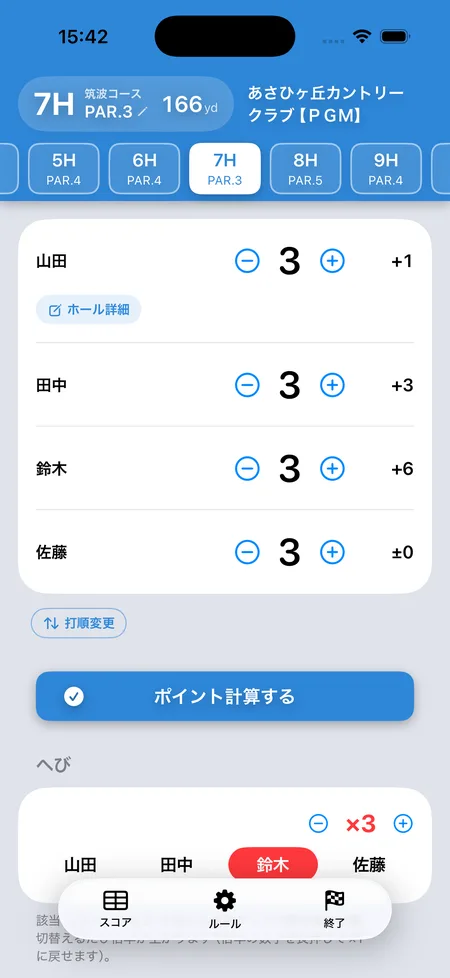

ゴルフ「へび（スネーク）」のルールと計算方法
SQORE編集部 ｜ 2026年8月15日更新
へび（スネーク）は、3パットした人に「へび」が移っていき、最後に持っていた人が全員にポイントを払う罰ゲームです。ゲームというより「地雷」。誰かがへびを持っている間は、全員のショートパットに異様な緊張感が生まれます。
基本ルール
- 誰かが3パットをしたら、その人が「へび」の保持者になります。
- 別の人が3パットしたら、へびはその人に移動します。
- ラウンド終了時にへびを持っていた人が、他の全員に決めたポイント（例: 1人10pt）を払います。
- 誰も3パットしなければ、そのラウンドのへびは発生しません。
バリエーション
- 育つへび — 保持者が切り替わるたびに支払い倍率がアップ。3パットが出るほどへびが育ち、最後に持っていた人のダメージが大きくなります。世間ではこの方式が基本形です。
- 前半・後半で別のへび — ハーフごとにへびをリセットして清算する方式。これも定番の運用です。
- 最終ホールは倍 — 上がりホールでの3パットは×2にする盛り上げルール。
- 4パット以上も同じ — 何パットでも「3パット以上」で移動、とするのが一般的です。
例（1人10pt・育つへび）
3Hで田中さんが3パット → へびは田中さん
9Hで自分が3パット → へびは自分に移動（倍率×2に成長）
そのまま18H終了 → 自分が全員に20ptずつ支払い
数えてみた：へびを払うのは「その日いちばん3パットした人」か
へびは「パットが下手な人への罰ゲーム」だと思われがちです。本当にそうなのか、4人ラウンドを20万回シミュレーションして数えました。1ホールあたりの3パット率を5%・10%・15%と変えています（アマチュアの目安は10%前後、上手い人で5%前後）。
| 1ホールの3パット率 | ハーフでへびが出ない確率 | 払った人の3パット回数 | 3パット1回だけで払った割合 | 1ラウンドの支払い総額 |
|---|---|---|---|---|
| 5%（上手い人） | 15.9% | 1.62回 | 54.2% | 29.2pt |
| 10%（平均的） | 2.3% | 2.43回 | 23.4% | 51.4pt |
| 15%（苦手） | 0.3% | 3.30回 | 8.8% | 69.6pt |
1人10pt・4人・前後半別ONの設定。支払い総額は「払う人が他の3人にいくら渡すか」の1人あたり金額の合計です。
払った人の5人に1人は、3パットが1回だけ
平均的な3パット率10%でも、払った人の23.4%は、その日3パットを1回しかしていません。上手い人ばかりの組（5%）だと54.2%、つまり半分以上が「たった1回の3パット」で全額を払っています。
そして「その日いちばん3パットが多かった人」が払う確率は、こうなりました。
| やり方 | 最多3パットの人が払った割合 | 偶然ならこの割合 |
|---|---|---|
| 18ホール通し（払うのは1人） | 51.3% | 25% |
| 前半・後半で分ける（払うのは最大2人） | 78.0% | 約44% |
18ホール通しだと、その日いちばん3パットした人が払うのは半分だけ。残りの半分は、たまたま終盤に3パットした別の人が全額を持っていきます。へびは「一番下手な人」ではなく「最後に3パットした人」を罰するゲームです。
へびの本質
前半に3パットを5回した人より、17番で1回した人のほうが払う。
だから終盤のショートパットに緊張が走るわけで、これは欠陥ではなくこのゲームの狙いそのものです。
「育つへび」は、思っているより育つ
保持者が別の人に移るたびに倍率が1つ上がる「育つへび」は、世間ではこれが基本形です。ただ、18ホール通しでやると想像以上に膨らみます。
「1人10ptなら大したことない」と思って始めても、×5で4人ラウンドなら、他の3人に50ptずつ＝合計150ptを1人でかぶります。通しでやるなら、基本ptは控えめにしておくのが無難です。
前半・後半で分けると、何が変わるのか
ハーフごとにへびをリセットする方式は定番ですが、数字で見ると「総額は変わらないが、1人に集中しなくなる」のが効果です。
| 18ホール通し | 前半・後半で分ける | |
|---|---|---|
| 1ラウンドの支払い総額 | 49.0pt | 51.4pt |
| 平均倍率 | 4.9倍 | 2.6倍 |
| 1人が払う側になる確率 | 25% | 43% |
| 最多3パットの人が払う割合 | 51.3% | 78.0% |
払う人が増えるぶん1回あたりが軽くなり、しかも「本当にパットが崩れた人が払う」精度は上がります。荒れすぎるのが嫌なら分ける、一撃の緊張感が欲しいなら通し、という選び方になります。
パットの上手さは、どれくらい効くのか
3パット率が5% / 10% / 10% / 15% の4人で回った場合です。
| その人の3パット率 | 払う側になる確率 | 1ラウンドの平均支払い |
|---|---|---|
| 5% | 22% | 6.4pt |
| 10% | 43% | 12.6pt |
| 15% | 61% | 18.5pt |
パットが苦手な人は上手い人の約3倍払います。実力はちゃんと効いています。ただし61%止まりで、4割は払わずに逃げ切れるのがへびの救いです。
上手い人だけで回ると、へびが出ないことがある
3パット率5%の組では、ハーフの15.9%でへびが1度も発生しません。前半だけノーへびで終わる、ということが6回に1回起きる計算です。
パットが上手いメンバーで盛り上げたいなら、へびの条件を「3パット」から「4パット以上」ではなく、「パーオンして3パット」や「1mを外したら」に変える会もあります。人数と腕前に合わせて、発生頻度を先に確かめておくと空振りしません。
スタート前に決めておくこと
へびは判定がシンプルなぶん、境目で揉めます。1番ティーで確認しておく項目です。
- OK（コンシード）はどう数えるか — 2パット目でOKを出したら「2パット」。入れさせるなら実打数。どちらかを先に決めます
- グリーン外からのパターは1パットに数えるか — 数えないのが一般的です
- 4パット以上も同じ扱いか — 「3パット以上で移動」が一般的。4パットで2つ育つ、とする会もあります
- 同じホールで2人が3パットしたら — 後にホールアウトした人が持つのが自然です
- 最終ホールの扱い — 18番の3パットは倍、とする盛り上げルール。入れるなら先に宣言を
- 前半・後半で分けるか — 上の表のとおり、金額の重さが変わります
SQOREでの扱い
アプリのSQOREが設定として持っているのは、1人あたりの支払いpt（既定10pt）、育つへび（既定ON。別の人に移ったときだけ倍率+1で、同じ人が続けて3パットしても増えません）、前半・後半で別のへび（既定ON。9ホールなど18ホール未満のラウンドでは自動でOFF）、最終ホール保持者は×2（既定OFF）の4つです。前後半別のときは、前半の保持者と後半の保持者がそれぞれ独立に支払います。
へびは打数の入力が要りません。3パットした人をタップするだけで動きます。「パーオンして3パット」「1mを外したら」といった条件は判定しないので、その場のルールで誰をタップするか決めてください。倍率は手動で±調整もできます。
アプリならへびの持ち主をタップするだけ
いま誰が持っているか、倍率がいくつかが常に見える
iPhoneアプリのSQOREなら、3パットした人をタップするだけでへびが移動します。「結局いま誰が持ってるんだっけ？」で止まることがありません。
画面は育つへびで2回まわった状態（×3）。前半・後半で分ける方式、最終ホール保持者の倍にも対応し、清算まで自動です。オリンピックやラスベガスと同時進行させるのが定番の遊び方です。

よくある質問
へびはパットが下手な人が損するゲーム？
そうとも言い切れません。20万ラウンドのシミュレーションでは、18ホール通しでやった場合、その日いちばん3パットが多かった人が払うのは51.3%でした。残り半分は、たまたま終盤に3パットした別の人です。払った人の2割は3パットが1回だけでした。前半・後半で分けると、最多3パットの人が払う割合は78.0%まで上がります。
育つへびは平均でどのくらいの倍率になる？
1ホールの3パット率を10%として、18ホール通しなら平均4.9倍（×4以上が8割）、前半・後半で分けるなら平均2.6倍でした。通しでやるときは基本ポイントを控えめにしておくと荒れません。
パットの記録が面倒では？
へびをやるならパット数の記録は必須です。アプリでスコアと一緒にパット数を付けておくと、へびの管理も平均パットの分析も同時にできて一石二鳥です。
OKパットはどう扱う？
OK（ギミー）を出したパットは入ったものとして数えるのが一般的です。へびが絡むホールではOKを出すかどうかも駆け引きになります。
この記事の検証方法
4人ラウンドを20万回シミュレートして集計しました。1ホールごとに各プレイヤーが独立に3パットするものとし、その確率を5%・10%・15%と変えています（実際のラウンドではホールの難易度やグリーンの状態で前後します）。同じホールで複数人が3パットした場合は、そのうちの1人がランダムに保持者になるものとしました（実際には最後にホールアウトした人が持ちます）。倍率の計算はSQOREアプリの実装と同じで、保持者が別の人に移ったときだけ+1、同じ人が続けて3パットしても増えません。前半・後半で分ける設定では、前半の保持者と後半の保持者がそれぞれ独立に支払います。
へびの管理も、清算も自動で
SQOREはへび・オリンピック・ラスベガスなど定番ゲームのポイントを自動計算する無料アプリです。
ゲームをしない日はスコアアプリとしてそのまま使えます。いま打つホールの自分の平均スコアやOB率も出ます。
Download on theApp Store